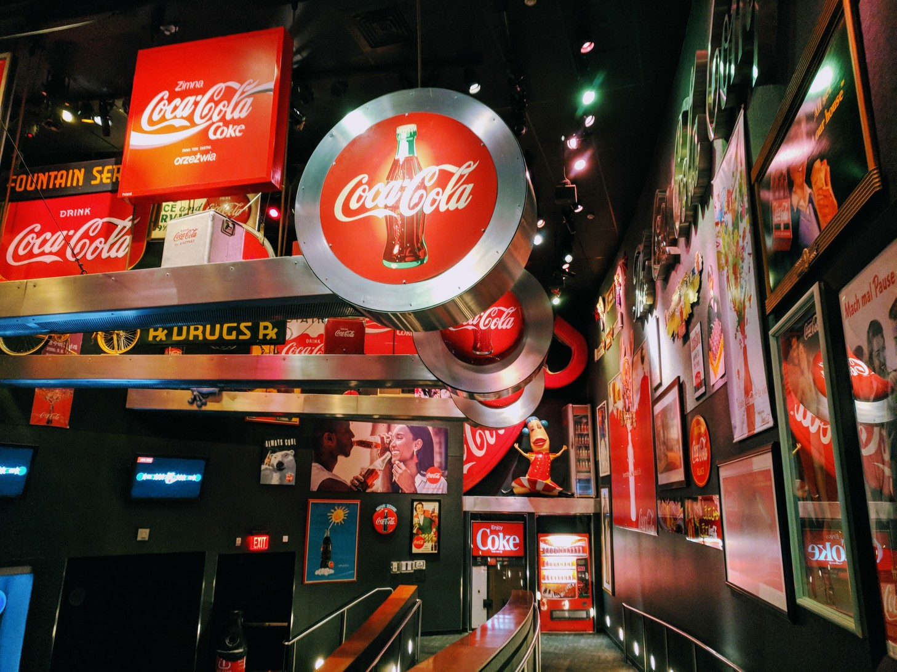
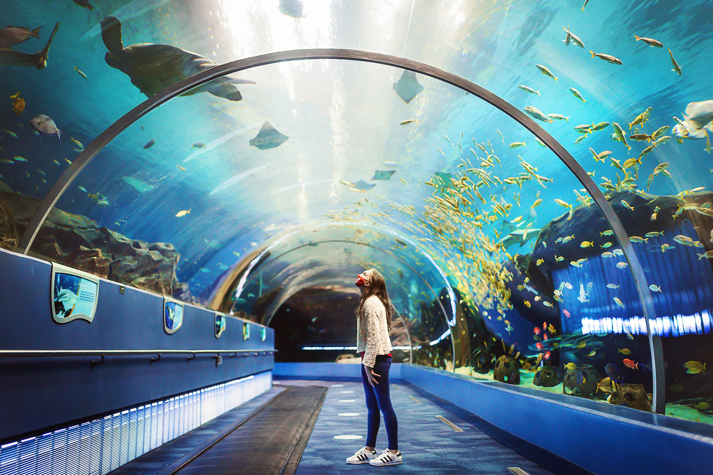
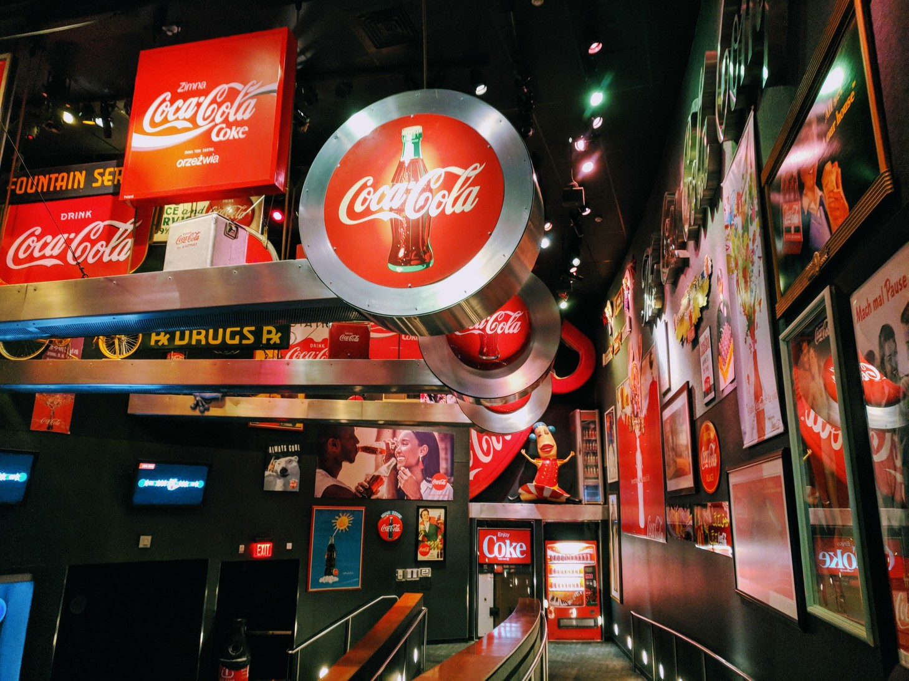
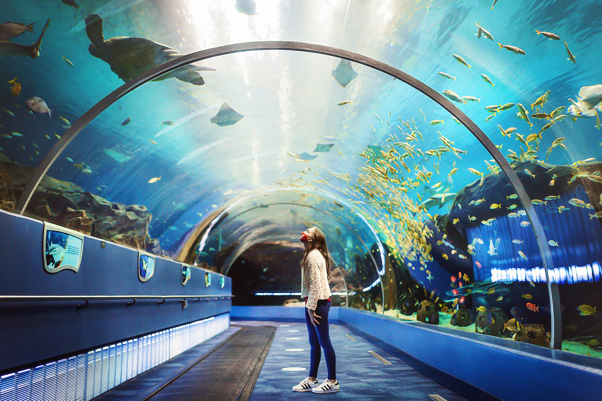

Discover the Beauty of Georgia
Explore the rich history, vibrant culture, and scenic landscapes of the Peach State.
this is a test
Explore Georgia's Official WebsiteTop Attractions
- Stone Mountain
- The World of Coke
- The Aquarium
Must-Try Foods
- Peach Pie
- Boiled Peanuts
- Georgia Peach Ice Cream
Georgia Cities
| City | Population | Year Incorporated |
|---|---|---|
| Atlanta | 498,044 | 1847 |
| Savannah | 145,862 | 1733 |
| Macon | 153,095 | 1823 |
(The Georgia state flag)